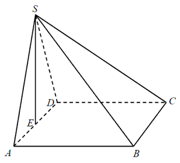

Jesteś tutaj: Matura
podstawowa - kurs - część 55 - zadania
Matura podstawowa - kurs - część 55 - zadania
Cały kurs na: ./matematyka-matura-podstawowa-kurs.html.
Wysokość graniastosłupa prawidłowego czworokątnego jest równa \(6\), a kąt
nachylenia jego przekątnej do płaszczyzny podstawy jest równy \(60^\circ \). Długość tej przekątnej
jest równa
A.\(3\)
B.\(\sqrt{3}\)
C.\(2\sqrt{3}\)
D.\(4\sqrt{3}\)
D
W ostrosłupie prawidłowym czworokątnym \(ABCDS\) o podstawie \(ABCD\) i wierzchołku
\(S\) trójkąt \(ACS\) jest równoboczny i ma bok długości \(8\). Oblicz sinus kąta nachylenia ściany
bocznej do płaszczyzny podstawy tego ostrosłupa (zobacz rysunek). 
\(\sin \alpha =\frac{\sqrt{42}}{7}\)
W graniastosłupie prawidłowym czworokątnym \(ABCDEFGH\) przekątna \(AC\) podstawy
ma długość \(4\). Kąt \(ACE\) jest równy \(60^\circ\). Oblicz objętość ostrosłupa \(ABCDE\)
przedstawionego na poniższym rysunku. 
\(V=\frac{32\sqrt{3}}{3}\)
W ostrosłupie prawidłowym czworokątnym krawędź boczna ma długość \(5\) cm, a
krawędź podstawy \(\sqrt{8}\) cm. Wówczas cosinus kąta nachylenia krawędzi bocznej do płaszczyzny
podstawy jest równy:
A.\( \frac{\sqrt{2}}{5} \)
B.\( 0{,}6 \)
C.\( 0{,}4 \)
D.\( \frac{\sqrt{8}}{10} \)
C
W graniastosłupie prawidłowym czworokątnym wysokość graniastosłupa jest o \(4\)
krótsza od przekątnej podstawy i o \(8\) krótsza od przekątnej graniastosłupa. Oblicz sinus kąta
pomiędzy przekątną graniastosłupa a płaszczyzną podstawy.
\(\sin \alpha =\frac{3}{5}\)
W graniastosłupie prawidłowym czworokątnym \( ABCDEFGH \) połączono punkty będące
środkami krawędzi \( BC \), \( CD \), \( AD \) i \( GH \). Wyznacz objętość powstałej bryły wiedząc,
że \( \vert{DB}\vert=5\sqrt{2} \) i kąt \( DBH \) ma miarę \( 60^\circ \).
\(V=\frac{125\sqrt{6}}{12}\)
W graniastosłupie prawidłowym czworokątnym \(EFGHIJKL\) wierzchołki \(E, G, L\)
połączono odcinkami (tak jak na rysunku).  Wskaż kąt między wysokością \(OL\) trójkąta \(EGL\) i płaszczyzną podstawy tego
graniastosłupa.
Wskaż kąt między wysokością \(OL\) trójkąta \(EGL\) i płaszczyzną podstawy tego
graniastosłupa.
Wskaż kąt między wysokością \(OL\) trójkąta \(EGL\) i płaszczyzną podstawy tego
graniastosłupa. A.\( \sphericalangle OGL \)
B.\( \sphericalangle HOL \)
C.\( \sphericalangle HLO \)
D.\( \sphericalangle OHL \)
B
Wysokość graniastosłupa prawidłowego czworokątnego jest równa \(16\). Przekątna
graniastosłupa jest nachylona do płaszczyzny podstawy pod kątem, którego cosinus jest równy
\(\frac{3}{5}\). Oblicz pole powierzchni całkowitej tego graniastosłupa.
\(P=144+384\sqrt{2}\)
Pole podstawy graniastosłupa prawidłowego czworokątnego jest równe \(36\), a miara
kąta nachylenia przekątnej graniastosłupa do płaszczyzny jego podstawy jest równa \(30^\circ\).
Wysokość tego graniastosłupa jest równa
A.\( 3\sqrt{2} \)
B.\( 6\sqrt{2} \)
C.\( 2\sqrt{6} \)
D.\( 3\sqrt{6} \)
C
Krawędź boczna ostrosłupa prawidłowego trójkątnego jest nachylona do płaszczyzny
podstawy pod kątem \(60^\circ\). Odległość spodka wysokości ostrosłupa od krawędzi jest równa \(4\).
Oblicz objętość tego ostrosłupa.
\(V=\frac{128\sqrt{3}}{3}\)
Objętość ostrosłupa prawidłowego trójkątnego \(ABCS\) (tak
jak na rysunku) jest równa \(72\), a promień okręgu wpisanego w podstawę \(ABC\) tego ostrosłupa jest równy \(2\). Oblicz tangens kąta między
wysokością tego ostrosłupa i jego ścianą boczną. 
\(\operatorname{tg} \alpha =\frac{\sqrt{3}}{9}\)
Podstawą ostrosłupa \(ABCDS\) jest kwadrat \(ABCD\). Wysokość \(SE\) ściany bocznej
\(ADS\) jest jednocześnie wysokością ostrosłupa, a punkt \(E\) jest środkiem krawędzi \(AD\) (zobacz
rysunek). Pole ściany \(ADS\) jest równe \(12\) cm2, a objętość ostrosłupa jest równa
\(48\) cm3. Oblicz miarę kąta nachylenia krawędzi bocznej \(CS\) do płaszczyzny podstawy
ostrosłupa. Wynik zaokrąglij do \(1^\circ \). 
\(31^\circ \)
Podstawą ostrosłupa \(ABCDS\) jest romb \(ABCD\) o boku długości \(4\). Kąt \(ABC\)
rombu ma miarę \(120^\circ \) oraz \(|AS|=|CS|=10\) i \(|BS|=|DS|\).
Oblicz sinus kąta nachylenia krawędzi \(BS\) do płaszczyzny podstawy ostrosłupa.
\(\sin \alpha =\sqrt{\frac{22}{23}}\)
Podstawą ostrosłupa \(ABCDS\) jest prostokąt, którego boki pozostają w stosunku \(3
: 4\), a pole jest równe \(192\) (zobacz rysunek). Punkt \(E\) jest wyznaczony przez przecinające
się przekątne podstawy, a odcinek \(SE\) jest wysokością ostrosłupa. Każda krawędź boczna tego
ostrosłupa jest nachylona do płaszczyzny podstawy pod kątem \(30^\circ\). Oblicz objętość
ostrosłupa. 
\(V=\frac{640\sqrt{3}}{3}\)